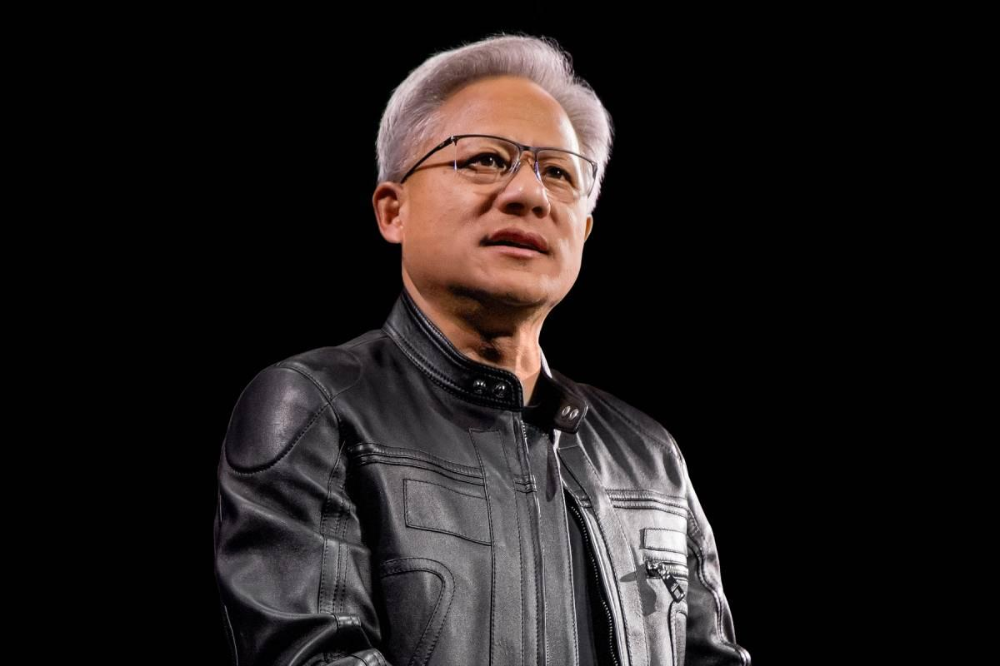
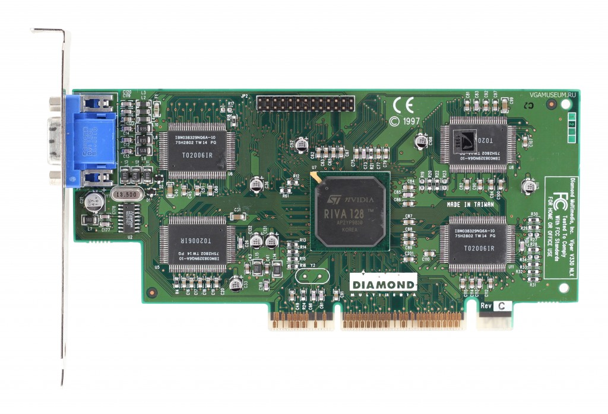
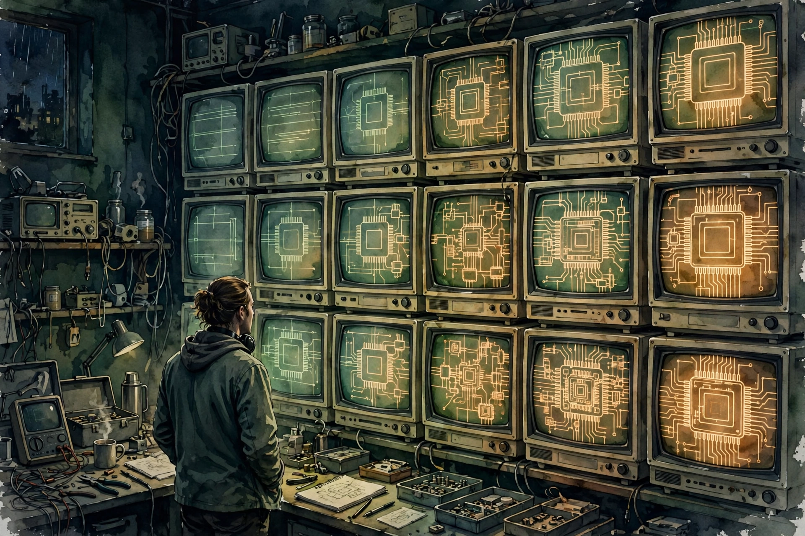
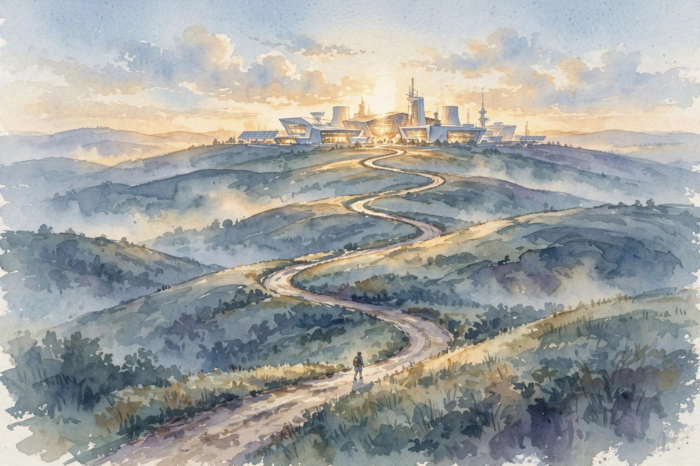
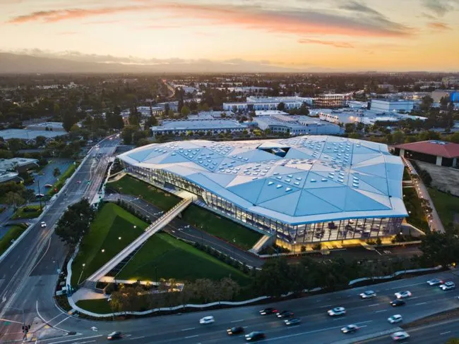
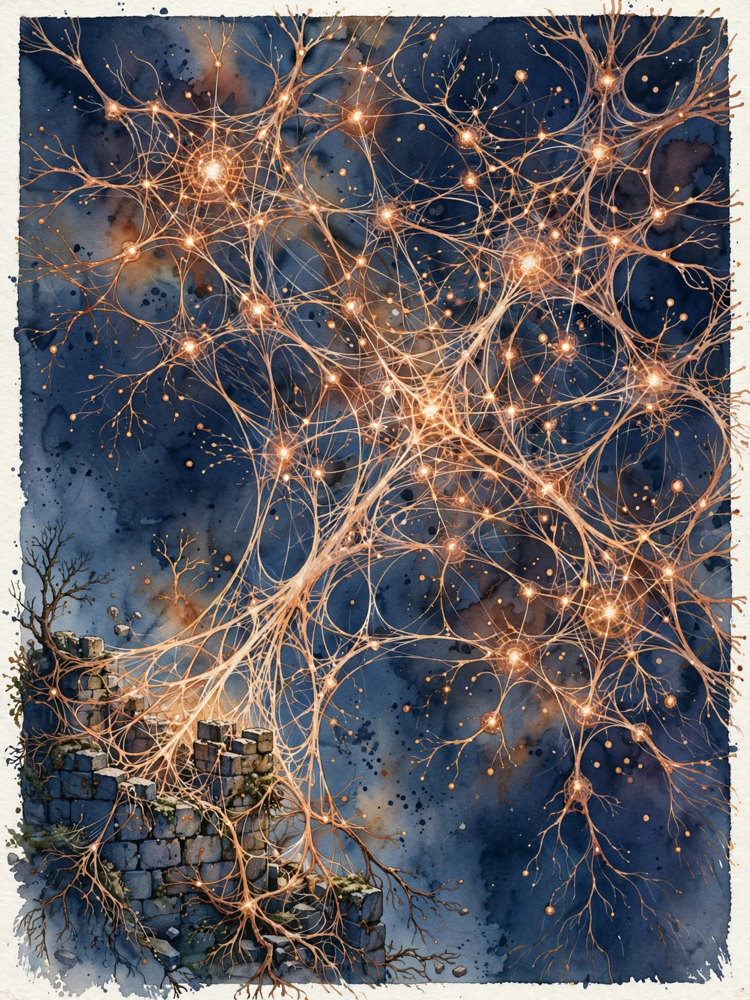

Acquired · Episode 1 · Companion
NVIDIA CEO Jensen Huang
After 500 hours of research over two years, Ben and David flew to Nvidia headquarters and sat down with the man himself. What follows is not the company history. It is the decision history: how Jensen bets the company, why he prices like an intelligence company instead of a chip company, and the one org rule he refuses to bend.

Photo. Jensen Huang, co-founder and CEO of Nvidia. Source: dcinside Issue Feed (image search result), via https://issuefeed.dcinside.com/content/2314457
Watch. The official Acquired episode video (1 hr 32 min). Chapter times below match the official YouTube chapter marks.
The Wisdom Index: every nugget in this companion
- Bet the company only after you simulate it
- Standards beat cleverness
- Invest 10,000 person-years before the market
- One rule: never break compatibility
- Mission is the boss
- Position near where the apple will fall
- Buy the missing half of the future
- Enter zero-billion-dollar markets
- Moats are networks, not walls
- Learn from everyone, adopt from no one
- The entire ball of wax
Source fact A claim from the episode transcript. Interpretation My read on what it means. Facts carry episode chapter times. Times marked ~ are proportional estimates from word position, since the transcript has no timestamps.
00:00:41
Intro: The Man Himself
Source fact Ben and David open with the stakes. They researched Nvidia for something like 500 hours over two years. Then they flew to Nvidia headquarters to sit down with Jensen himself, the founder and CEO of the company behind the AI explosion.
At recording time, October 2023, Nvidia was worth $1.1 trillion. That made it the sixth most valuable company in the entire world. Expectations sat sky high. The question that hangs over the episode: can Nvidia keep this insane prosperity for years, and can it hold its ridiculous lead as the AI market takes shape?
Jensen takes them down memory lane. He covers the path from graphics chips to the data center to AI. He describes multiple near-death moments. He shares founder advice. Near the end he shows an emotional side of the founder journey.
Interpretation The three-part Nvidia series tells you what happened. This episode tells you how Jensen decided. That is the rarer asset. Strategy books describe outcomes. Here the decider narrates the decision rule, live.
00:02:54
RIVA 128: The Bet-the-Company Chip

Photo. A Diamond Viper V330 card built on the NVIDIA RIVA 128 chip, 1997. Source: vgamuseum.ru.
Source fact Jensen founded Nvidia in 1993 with Chris Malachowsky and Curtis Priem. He says Nvidia was the only consumer 3D graphics company created at that time. The thesis: the PC should become an accelerated PC, because Windows was still a software-rendered system.
The first architecture bet was wrong. The first chips, NV1 and NV2, used forward texture mapping. They drew curves and tessellated them, which avoided Z-buffers. A Z-buffer is memory that stores how far each pixel is, so the chip knows which surface sits in front. The skip looked clever. It was the wrong answer.
Nugget 2 · Standards
Standards beat cleverness
What happened. When Nvidia admitted the NV1 architecture was wrong, Microsoft already shipped DirectX, which was fundamentally incompatible with it. About 30 competitors already entered the field. Nvidia had months of cash left.
Why it matters. A technically clever design lost to the industry standard. The market did not grade on elegance. It graded on compatibility.
The principle. When a standard emerges, adopt it fast. Cleverness that fights the standard is just expensive delay.
Source fact With cash running out, Nvidia made what Jensen calls probably the company's best moment. They decided not to fight DirectX. They decided to build the best chip in the world for it: the RIVA 128, the first fully hardware-accelerated 3D pipeline for a PC. Transform, projection, lighting, frame buffer: every stage in hardware.
The constraint changed everything. They could afford exactly one tape-out. Taping out means sending the final chip design to the factory. Each tape-out costs millions and takes months. A mistake means starting over.
The normal industry process meant death for them: build the chip, write the software, find the bugs, tape out again, repeat. So Jensen bought an emulator from a company called iSOS, on the day it closed its doors. He called, bought their inventory, no promises. The software team wrote the entire stack and ran it on the emulator. It rendered about one frame per hour. They sat in the lab and watched Windows paint, one frame at a time, until they believed the chip was perfect.

Illustration. The lab in 1997: one frame per hour, watched until the chip was perfect. AI-generated watercolor.
Then they taped out once and went straight to production, marketing blitz, developer relations, everything. The chip came back supporting 8 of the 32 DirectX blend modes. Jensen says the lesson was to implement all 32 the next time. So they convinced the market and the developers that the other 24 did not matter.
RIVA 128: 8 of 32 DirectX blend modes
The chip shipped with one quarter of the standard. The other three quarters got sold around. Hover for detail.
Source: Acquired, NVIDIA CEO Jensen Huang, @00:02:54 to @00:17:27.
~00:12
The Rule: Pull the Future Forward
Source fact Ben asks the obvious question. Jensen keeps pushing all the chips in, and it keeps working. Is the lesson just bet big? Jensen says no.
His rule: when you bet the farm, you pull everything risky from the future into the present. Everything they could prefetch, they prefetched. Everything they could simulate, they simulated. You push your chips in when you know it will work, because you already simulated it.
Interpretation A bet is not brave because it is large. A bet is sound because the uncertainty left the room before the money moved. RIVA 128 was not a gamble. It was a certainty purchased with an emulator and a year of patience.
Nugget 1 · Decision rule
Bet the company only after you simulate it
What happened. Nvidia could afford one tape-out. So it bought a dying company's emulator, wrote all the software first, and watched the chip run at one frame per hour until it was perfect. Then it bet everything.
Why it matters. The company survived its near-death not through courage but through certainty. Simulation converted a fatal risk into a known outcome.
The principle. Before a big bet, drag every risk you can into the present. Prefetch what is knowable. Simulate what is testable. Only then push the chips in.
Toy: the bet simulator
Jensen's rule as a machine. Set how much risk you removed before the bet, and how big the bet is. The verdict follows his logic.
00:17:27
CUDA: The 10,000-Person-Year Bet
Source fact After RIVA 128, Nvidia won graphics. Then Jensen made a stranger bet: CUDA, a programming model that let developers run general computation on the graphics chip. The investment reached something like 10,000 person-years, poured in before any market existed.
Why did he believe? Two reasons from the episode. First, the hardware was already right. A programmable shader is a massively parallel processor. Nvidia already put the idea to the test on CT reconstruction and image processing. Jensen calls the GPU the only processor in the world that works that way.
Second, Jensen went back to first principles after AlexNet in 2012. AlexNet was a neural network that crushed 30 years of computer vision work overnight. Jensen asked why it worked. His answer: deep learning is a universal function approximator. Give it enough example data and enough layers, and there is no reason it cannot keep getting better as data and models grow.
Then the hinge. For most valuable problems, causality does not matter. Prediction is enough. Do you care why someone prefers one toothpaste over another? No. You care that you can predict the choice. The same holds for movies, music, weather, and which item to show next in a social feed.
Scale and emergence, per the episode
Jensen describes the first GAN as a 32 by 32 blurry cat. His question: how far can it go? Hover for detail.
Source: Acquired, NVIDIA CEO Jensen Huang, @00:17:27 to @00:22:21. Parameter counts are Jensen's stated thresholds.
Source fact The early believers were researchers. Jensen says CUDA democratized supercomputing. The first users worked on molecular dynamics, CT reconstruction, seismic processing, weather simulation, quantum chemistry. When deep learning arrived, Nvidia went to every AI researcher on the planet and asked how to help: Yann LeCun, Andrew Ng, Geoff Hinton, Ilya Sutskever. Jensen read the papers himself. Papers came every three months, then every day.
On language models, his first reaction to BERT was about how clever the trick was: mask out words, make the model guess them. Text encodes reasoning, he argues. Humans get common sense from reading. Why would a machine not learn reasoning from reading too?
Nugget 3 · Conviction
Invest 10,000 person-years before the market
What happened. Nvidia poured roughly 10,000 person-years into CUDA while no market for it existed. The bet rested on first principles: parallel hardware plus universal function approximation.
Why it matters. By the time the market arrived, nobody could catch up. A decade of compound investment became an unbridgeable lead.
The principle. If first principles say the market must exist, build for it before it does. Time in the market beats timing the market, even in R&D.
Source fact Jensen states exactly one rule that is not negotiable in the company: every accelerator Nvidia makes must be architecturally compatible with every other one. He says Nvidia is the only accelerator company on the planet where that is true. The installed base: 250 to 300 million active CUDA GPUs, all compatible. Everything else in the company is negotiable.
Nugget 4 · Platform
One rule: never break compatibility
What happened. Every Nvidia accelerator stays architecturally compatible with every other one. Two hundred fifty to 300 million active CUDA GPUs form one unbroken platform.
Why it matters. Developers invest years learning CUDA and writing CUDA code. If a new chip invalidates that investment, the platform dies. Compatibility turns a product line into a platform.
The principle. Pick the one constraint that protects your ecosystem and make it sacred. Negotiate everything else.
00:27:13
Mission Is the Boss
Source fact Jensen has more than 40 direct reports. He rejects the standard org chart. His argument: a company is the machinery for building its product, so the org should mirror the product's architecture. It makes no sense that every company's chart looks the same when they all build different things.
Instead, Nvidia wires itself like a neural network around missions. The phrase inside the company is mission is the boss
. They define the mission, then wire the best skills and teams across the whole organization to achieve it, cutting across reporting lines. Information moves fast and flat: Jensen describes a robotics meeting with new college graduates, vice presidents, and executive staff in one room, deciding together, everyone hearing the decision at the same moment. Nobody has power from privileged information.
The price: pressure on leaders is high. In a command-and-control system, your boss has more power because they are closer to the information. At Nvidia, information is everywhere, so leaders have to actually lead.
Nugget 5 · Organization
Mission is the boss
What happened. With 40 plus direct reports, Jensen runs no standard hierarchy. Teams form around missions, drawing the best people from anywhere, and everyone hears decisions at the same moment.
Why it matters. Information speed becomes the advantage. When nobody hoards knowledge, the company decides at the speed of its fastest thinker, not its tallest chain.
The principle. Design the org around the work, not around control. Strip privileged information and leaders must earn authority through reasoning.
00:34:16
The Data Center: Separating Compute from the Screen

Illustration. The decade-long road from desktop GPUs to the data center. AI-generated watercolor.
Source fact About 17 years before the interview, so around 2006, Jensen started the data center journey. His reasoning: Nvidia's technology was plugged into a computer that had to sit next to you, because it had to connect to your monitor. Desktops are a bounded market. There are only so many PCs and only so many displays to drive.
The insight: what if the computer does not have to be near the viewing device? One of his engineers showed him a demo: capture the frame buffer, encode it as video, stream it to a thin device. That became GeForce NOW, Nvidia's cloud gaming product, and a much bigger idea: compute can happen anywhere, and the screen can be anywhere else.
The physics objection is latency, specifically the speed of light. Jensen's answer: the speed of light end to end is only about 120 milliseconds across the planet. That is not that long. If you remove every other obstacle, light speed is fine. So build data centers as large as you like, and every small device instantly becomes amazing.
Source fact Nvidia's first data center product, then a second for enterprise OEMs, then a third: CUDA plus GPU as a supercomputer. Jensen's point: the data center business looks like it is about AI, but that is a false equivalence. Nvidia could explode into AI only because it had spent years learning to build data center computers in smaller markets first.
His decision rule: you cannot wait until the opportunity is in front of you. Position the company near where the apple will fall, close enough to make the diving catch. You do not have to be perfect. You have to be near.
Nugget 6 · Positioning
Position near where the apple will fall
What happened. Nvidia spent years selling data center products into small markets: cloud gaming, enterprise OEM graphics, CUDA supercomputers. When AI arrived, the company was already standing where the opportunity would land.
Why it matters. You cannot wait until the opportunity is visible. By then the position is taken. Adjacent practice in small markets is how you earn the right to catch the big one.
The principle. Do not predict the future exactly. Stand close to where it must happen, and practice the catch in smaller games first.
00:39:31
Mellanox: The Network Is the Computer

Photo. Nvidia's Endeavor building, Santa Clara. Source: wolfemechanical.com.
Source fact In 2019 Nvidia bought Mellanox, the Israeli high-performance networking company, for about 7 billion dollars. Jensen calls it one of the best strategic decisions he ever made. The company had some 3,200 people in Israel.
His reasoning has two parts. First: a data center is not distinguished from a desktop by its processor. Desktops and data centers use nearly the same CPUs and GPUs. What makes a data center a data center is the networking and infrastructure: how computing is distributed, how security is provided, how the network moves data. Those characteristics belonged to Mellanox, not Nvidia. If Nvidia wanted to build the computers of the future, and the computers of the future are data centers, then Nvidia had to own networking.
Second: AI training is the inverse of hyperscale cloud. Hyperscale takes commodity components and virtualizes many users onto one computer. AI training takes one job and orchestrates it across millions of processors. Commodity Ethernet is fine for Hadoop and search queries. It is not fine for sharding a model across thousands of GPUs. Supercomputing-style networking, InfiniBand, is ideal for that. Jensen saw this before others because he stood near the opportunity: large language models were about to need exactly this.
Nugget 7 · Acquisitions
Buy the missing half of the future
What happened. Nvidia paid about $7 billion for Mellanox, a networking company, because the data center is defined by its network, not its processors. The 3,200-person Israel team became the fabric of Nvidia's AI systems.
Why it matters. The acquisition completed the machine. Chips compute, but networks turn thousands of chips into one computer. Without it, Nvidia sold parts. With it, Nvidia sells the computer.
The principle. Acquire the capability that completes your future product, not the one that extends your past. Buy what the next era requires.
~00:47
Zero-Billion-Dollar Markets
Source fact Jensen uses the phrase zero billion dollar market
for a market with no revenue yet that he believes will exist. His definition: there is no market yet, but we believe there will be one. Nvidia positions itself in these deliberately: PC gaming, the design workstation, supercomputing, the software-defined car, Omniverse.
When Nvidia entered automotive, a CTO told him cars cannot tolerate the blue screen of death. Jensen's answer: someday every car will be software-defined, and a software-defined car needs an incredible computer. Fifteen years later, he says, they were largely right.
Source fact Omniverse, at the time of the interview, had about 40 customers, including Amazon and BMW. It looked tiny. That is the point. You navigate the company toward non-consumption, places where nobody buys yet. Non-consumption means potential customers who buy nothing today because no good product exists for them yet.
Nugget 8 · Market entry
Enter zero-billion-dollar markets
What happened. Nvidia entered automotive when the market was zero, endured fifteen years of doubt, and watched software-defined cars arrive. Omniverse had only about 40 customers at recording time, and that smallness was the strategy working.
Why it matters. Enter before the market exists, and by the time it emerges there are few competitors shaped like you. The lonely years are the moat's foundation.
The principle. Navigate toward non-consumption. If everyone can see the market, the margins are already gone.
~00:51
Moats Are Networks, Not Walls

Illustration. The network of networks outgrows the castle wall. AI-generated watercolor.
Source fact Ben asks how a company that creates a market keeps its lead. Jensen dislikes the word moat, because it frames strategy as building walls around a castle. He prefers to think in networks. If you build the product right and an ecosystem grows around it, developers and customers build on you, and that network of networks is the moat. You enjoy the market together with everyone in the network, not alone behind a wall.
Interpretation This is the economics behind Nvidia's pricing power. The moat is not one chip. It is 250 to 300 million compatible GPUs, the CUDA software stack, the developers trained on it, the libraries, the Mellanox fabric tying it together, and the switching cost of rewriting all of it.
Nugget 9 · Moats
Moats are networks, not walls
What happened. Jensen rejects the castle metaphor. Nvidia's defense is an ecosystem: compatible GPUs everywhere, CUDA libraries, trained developers, networking fabric, all reinforcing each other.
Why it matters. Walls invite sieges. Networks invite joining. Every developer who builds on CUDA deepens the moat instead of attacking it.
The principle. Build the thing others build on. The moat is the crowd standing with you, not the wall standing between you.
00:55:54
Luck, Skill, and the Founder's Playbook
Source fact On luck, Jensen is blunt. You can do all the right smart things and still fail. You can do dumb things, and Jensen says he did many, and still succeed. Skill matters, but circumstances have to cooperate at the important moments.
Books: Jensen says Clay Christensen's series is the best, no contest: intuitive, sensible, approachable. He also likes Andy Grove's books. His method for reading business books: enjoy them, be inspired, but never adopt. Ask what it means for you, in your context, at your company's age. Learn from everyone, including competitors and adjacent industries. Education is free. Then come back and design your own strategy.
Nugget 10 · Learning
Learn from everyone, adopt from no one
What happened. Jensen reads Christensen and Grove closely, learns from competitors and adjacent industries, and then refuses to copy any of them. He designs Nvidia's own strategy from the raw material.
Why it matters. Adopted playbooks produce adopted results. The value of study is not the template. It is the raw judgment you build by translating ideas into your context.
The principle. Read widely, copy nothing. Ask what each idea means for your company at your stage, then write your own play.
Source fact Don Valentine of Sequoia, Nvidia's first investor, told Jensen at investment time:
if you lose my money I'll kill you
Don Valentine to Jensen Huang · Episode @00:55:54
Then, over the decades that followed, Valentine mailed him newspaper clippings with good job written over them in crayon. Both founding VCs, Sutter Hill and Sequoia, were still on the board 30 years later. Jensen says that almost never happens.
Source fact His greatest fear: he lets employees down. People joined because they believed in his hopes and dreams, and adopted them as their own. On time: there is plenty of time in the day if you prioritize and refuse to let Outlook control you. He admits he was late to the interview itself.
His advice on business plans: they should be much shorter. A financial forecast nobody can verify is not the point. The plan must answer: what is the true problem, what unmet need will emerge, and what will you do that is sufficiently hard that competitors cannot swarm it once they see it works.
00:59:54
Jobs, Safety, and the Thousand-Times Market
Source fact On jobs: productivity creates prosperity, and prosperous companies hire more people to expand into new areas. The failure mode in the fear is the belief that companies have no more ideas. History says otherwise: industry today is vastly larger than industry a thousand years ago because humans have infinite ambition. Net job growth does not guarantee no individual gets fired. His practical advice: you are more likely to lose your job to another human who uses AI than to an AI. Learn to use AI.
On safety, Jensen splits the problem. In robotics and self-driving: functional safety, active safety, when a human must be in the loop and when not. In information: bias, false information, artists' rights. Nvidia partnered with Getty and Shutterstock to train generative image models on licensed data instead of scraping the internet. For increasingly agentic AI: keep the human in the loop as long as it is sensible. Collect data, curate it, train, test, validate, then release. Do not let models self-learn in the wild.
Source fact The last idea is the pricing key for the whole track. Jensen was told long ago that video could never be a billion-dollar market, and that no chip company could ever be that big. His answer: stop being a chip company. Nvidia manufactures intelligence now. It manufactures productive work.
His arithmetic: if you build a chip for a car, your market is the number of cars times chips per car. If you build a system that acts as a chauffeur whenever needed, your market is the value of a chauffeur for everyone who has a car. The second market is enormously larger. By building on top of the chip, Nvidia grew its opportunity by probably a thousand times.
The thousand-times market
Jensen's arithmetic for why Nvidia stopped pricing like a chip company. The right bar is illustrative of his stated ratio. Hover for detail.
Source: Acquired, NVIDIA CEO Jensen Huang, @00:59:54. Ratio stated by Jensen as probably a thousand times.
Source fact Ben names the pattern the Moritz corollary to Moore's law, after Mike Moritz of Sequoia. When Moritz took over from Don Valentine, he looked at Sequoia's early funds, including the one with Cisco, and asked how they could ever top it. His answer: as compute gets cheaper, it reaches more of the economy, so the addressable markets get bigger. AI does the same thing.
~01:24
The Entire Ball of Wax
Source fact He closes with the people. Thirty years in, he is surrounded by colleagues with 25 to 30 years at the company. Not one of them ever gave up on him.
they never one time gave up on me and that's the entire ball of wax
Jensen Huang on his team · Episode ~01:24
Nugget 11 · People
The entire ball of wax
What happened. After thirty years, Jensen's inner circle still includes people from the founding era. Not one of them ever gave up on him, through near-deaths and drawdowns.
Why it matters. Strategy compounds, but only if the team stays. Every bet-the-company moment in this episode was survivable because the same people were still in the room.
The principle. The strategy is the team. Keep the people who never gave up, and be the founder nobody gives up on.
01:27:43
Carve-Outs and Outro
Source fact The episode closes with rapid personal questions. Favorite sci-fi, daily driver, favorite business book, Don Valentine stories, what he would tell his 40-year-old self, what he is afraid of, his final job, whether he would start a company in 2023, and how he thinks about market drawdowns. Then the outro: join the Slack, get the merch, and the sign-off question, who got the truth.
The episode in seven lines
- Simulate before you bet. RIVA 128 survived because the risk left the room before the money moved.
- Adopt the standard. The NV1's clever architecture lost to DirectX compatibility.
- Invest before the market. Ten thousand person-years of CUDA bought an unbridgeable lead.
- Keep one rule sacred. Every accelerator stays compatible, or the platform dies.
- Stand near the future. The data center pivot worked because Nvidia practiced in small markets first.
- Build the network, not the wall. Ecosystems defend better than fortresses.
- Price the intelligence, not the chip. The market above the silicon is a thousand times larger.
Distilled from Acquired, NVIDIA CEO Jensen Huang, Oct 2023. Full episode: youtube.com/watch?v=y6NfxiemvHg. Chapter times match the official YouTube chapter marks.